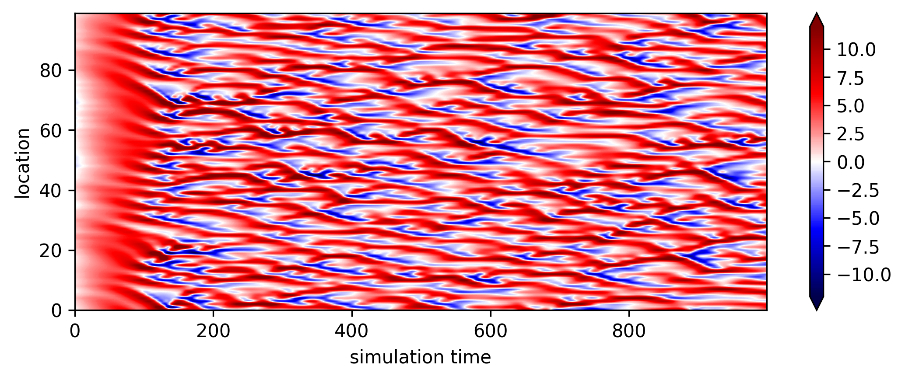
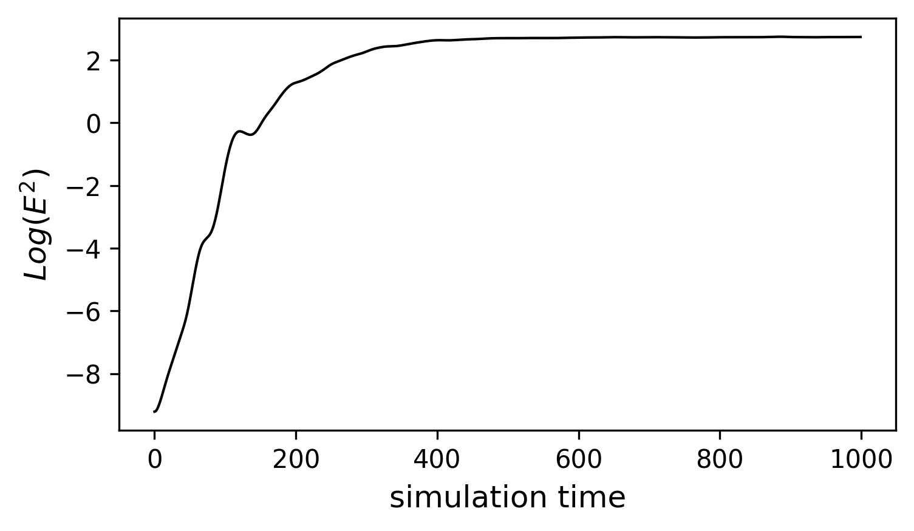
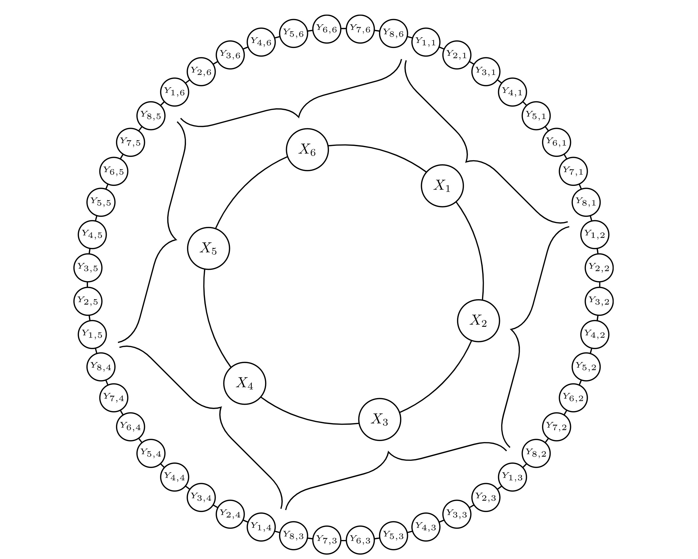
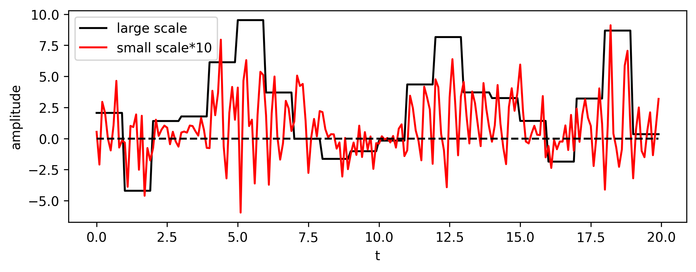
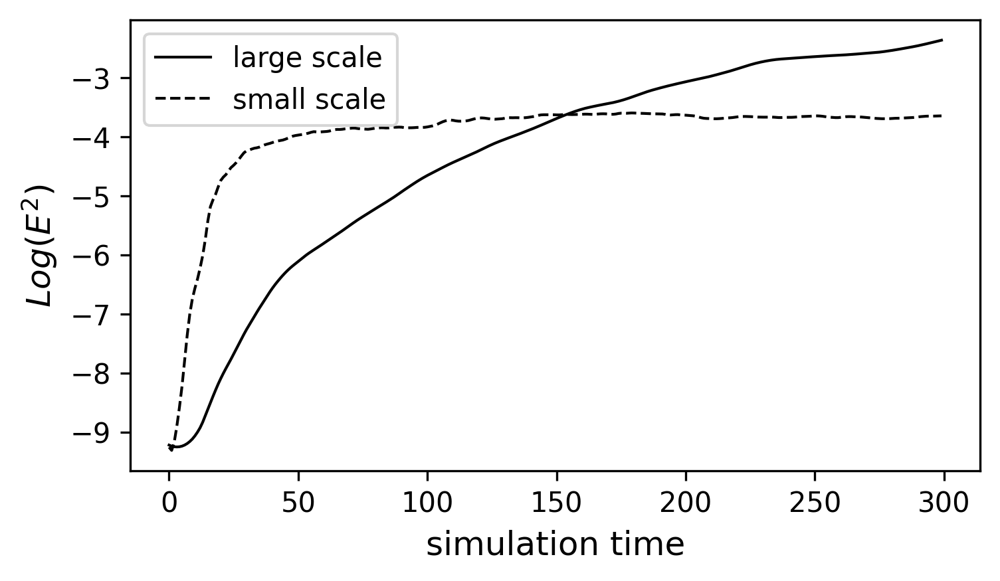

Week 4: The minimalist models for studying chaos and predictability II: Lorenz 96#
Following previous week, this week we will walk through the Lorenz 96 model, which is another widely used toy model in data assimilation and chaos studies. It is one of the first few models mimicking the nonlinear wave propagation in a narrow latitudinal band. A fun fact about Lorenz 96 model is that it was never published in a peer-reviewed scientific journal. Instead, this model was only presented by Ed. Lorenz at a conference in 1995 and was documented by Tim Palmer in a textbook later on in 2004. The story behind the model can be found in week 3.
The physical and mathematical background#
The formula of Lorenz 96 model (25) is a set of prognostic equations which predicts the evolution of \(X_i\). \(X_i\) represents the variable of interest at the longitude of \(i\).
One can easily find that two nonlinear terms, \(-X_{i-1}X_{i-2}\) and \(X_{i-1}X_{i+1}\) lead to the chaotic features in Lorenz 96 model while the last two terms on the right hand side are linear damping and constant forcing respectively. The first two terms represent the nonlinear advection of \(X_i\) from one grid to another. We can prove that the total energy is conserved when forcing \(F\) and damping \(-X_{i}\) are absent and domain is periodic (i.e., \(X_{i-K}=X_{i+K}\)). (HW)
The figure below shows a simulation from Lorenz 96 model with \(F\) = 8 and \(K\)=100. We can clearly observe nonlinear wave propagating in both directions after the system is fully established.

Fig. 7 An example of LR 96 model. The initial condition is spatially autocorrelated with \(r=0.9\) and \(\epsilon=\mathcal{N}(\mu=0,\sigma^{2}=0.01)\) (random white noise).#
Single scale#
Now we can go a step further by generating large ensemble simulations (e.g., 250 different members) and see when the error across different members starts to saturate. Here we define the error as the averaged variance of simulated \(X\). Here we choose \(X(t=300)\) in Figure 7 as the new initial state since it’s the time when the signal is fully developed. We add random white noise \(\epsilon=\mathcal{N}(\mu=0,\sigma^{2}=10^{-4})\) to each grid point at the initial states and re-run the model all over again.

Fig. 8 The error growth of LR96 model. The error is defined as the averaged variance across all ensemble members.#
From FIG8, we can find the error almost grows linearly at the very beginning and start to saturate around \(t>400\). A good reason for plotting model error in log scale is that the error growth at the initial stage is a function of \(exp(\alpha\tau)\) (where \(\frac{1}{\alpha}\) is characteristic timescale of error growth and the \(\tau\) is the time of integration). Therefore, a log-scale error is nearly linear and it’s slope is the leading Lyapunov exponent. The Lyapunov time (\(\frac{1}{\alpha}\)) is then defined as the error doubling time (i.e., (26))
In the case above, the error doubling time is around \(t=13\), indicating that the amplitude of initial error doubles for every 13 time steps of integration. The error saturates when it is indistinguishable from the climatological variance.
By perturbing the initial condition with infinitesimal error and inspecting the error growth of a given dynamical system, this is so-called perfect model experiment, which was first proposed in a conference at Boulder, Colorado, organized by World Meteorological Organization in 1966, where Jule Charney was the head committee. Since then, it has become a rule of thumb for estimating the predictability limit across different dynamical systems.
Note
In 1966, the numerical modeling of the complete global circulation was just leaving its infancy according to Lorenz’s words. The conference held in Boulder collected the three state-of-art climate models at that time: Leith (1965), Arakawa-Mintz (1965) and Smagorinsky (1965). During the break between sessions, Charney persuaded the developers of the three forecast models to do something similar to what we showed in FIG8. At that given period, the estimated error doubling time is around 5 days. However, as time passed by and more sophisticated models were developed, the estimated Lyapunov time is getting shorter and shorter. (e.g., 3 days in Smagorinsky 1969) (Can you answer why?)
Multi-scale interactions#
In real atmosphere, the nonlinear interaction usually involved the energy cascade over different scales. Thus, Lorenz proposed another model, which involves the interaction between two scales.
(27) can be visualized as FIG9, which is from [RDubenN+17]. In a similar narrow latitudinal band, we implement ten additional small grids, \(Y_{j,i}\), for each \(X_{i}\), where their accumulated effect can feedback to the large grids(i.e., \(-\frac{hc}{b}\sum_{j=1}^{J}Y_{j,i}\) in (27)). At the same time, the large grids can modulate the small scale variability (i.e., \(\frac{hc}{b}X_i \) in (27)). In this model, there are three controlling parameters: c,b and h. \(c=b=10\) indicating the interaction within small grid is 10 times faster than the interaction within large grids. h is the coupling parameter, which represent the coupling strength between two different scales. In the real world, the small grid can be considered as the convective process while the large grids represent the resolved synoptic process.

Fig. 9 A schematic diagram of 2-scale Lorenz 96 model from Russell et al. (2017)#
Another way to visualize the connection between large and small scales is making a cross section (either with time or space fixed) such as the one shown below (FIG10). From Fig. 10, we can see that when \(X_i\) shows above normal activity, \(Y_{j,i}\) is more positive and with a bigger amplitude. It is similar to how the synoptic weather modulates the small scale convective activity.

Fig. 10 A cross section (x-fixed) of LR96 2-scale model.#
With (27), we repeat the same perfect model experiment and estimate the error growth rate for both small and large scales. The result is shown in FIG11. After introducing the small-scale to the system, we find the error doubling time is about an half of the error doubling time shown previously. It’s because the 2-scale version of LR96 model is more likely to resolve the small scale process. Thus, the early stage of error is dominated by the error growth in small scales. We can also see the error accumulated in large scales. The error growth in large scale goes through a linear regime before \(t=50\), which is associated with the error growth in small scales. After \(t=50\), the error in large scale keeps growing and even surpasses the climatological error of small scales. This feature is similar to the multi-scale forecast in the real world, where the predictability of convection diminishes in a few hours but SST or other low-frequency variability are still highly predictable at monthly or even longer time scales.

Fig. 11 Similar to Fig. 8, except for the 2-scale LR96 model. The chosen parameters are c=b=10, h=1, K=100, and J=1000.#
The early and late stages of error growth in a multi-scale flow.#
From FIG11, we can find that the error growth in large scale goes through two stages. At the very beginning , \(log(E)\) is almost a linear function of time. However, as \(log(E)\) is getting closer to the saturated error (i.e., the horizontal line in FIG8), its increase is getting slower. Thus, we can formulate a simple equation to describe the error growth across different stages, where the error growth rate depends on how close we are to the saturated regime.
where \(E^{\times}\) is the saturated error and \(\lambda_1\) is the error growth rate or the leading Lyapunov exponent. (28) has an analytical solution ((29))
By observing (28) and (29), one can find that \(E\) is simply a linear function of t when \(E\) is small (early stage). However, when \(E\) is big enough, the \(\frac{dE}{dt}\) will approach 0 (and will ultimately be 0). This special characteristic of hyperbolic-tangent curve is consistent with the overall error growth shown in FIG11. One can probably imagine applying similar approach to a more complicated state-of-art forecast system. Indeed, in [Lor82], Lorenz applied similar analysis to the most sophisticated model at that given time and estimated the corresponding solutions as what we showed above. More details can be found in the reading assignment.
References#
Ed N Lorenz. Atmospheric predictability experiments with a large numerical model. Tellus, 34(6):505–513, 1982.
Francis P Russell, Peter D Düben, Xinyu Niu, Wayne Luk, and Tim N Palmer. Exploiting the chaotic behaviour of atmospheric models with reconfigurable architectures. Computer Physics Communications, 221:160–173, 2017.